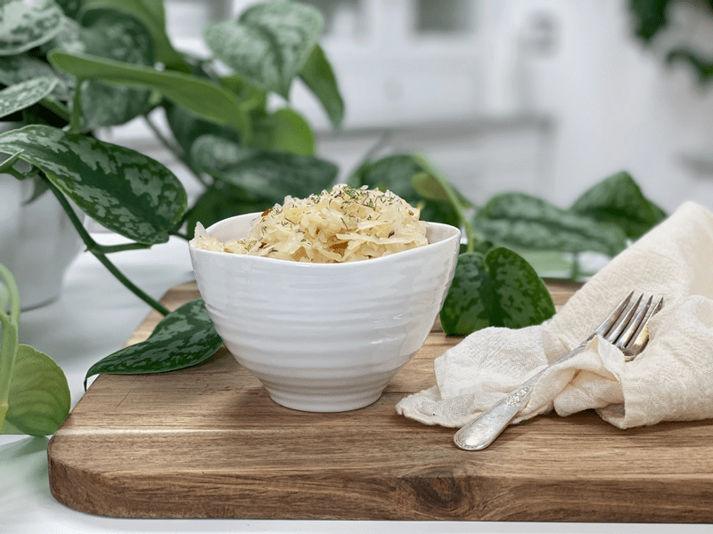
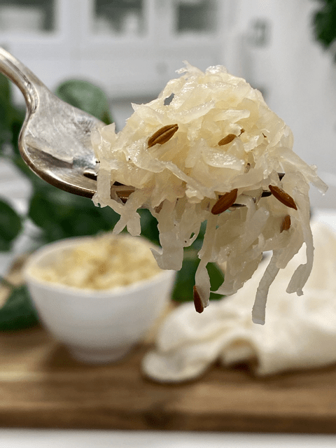

Caraway and Dill Sauerkraut
– raw, vegan, gluten-free, nut-free, cultured –
Culturing or fermenting foods is a way of quickly preserving them and at the same time, encouraging the growth of good bacteria (probiotics), which have numerous health benefits. Cultured foods can make a massive difference in the way you digest, the way you feel, and the overall health of your body. If you are new to this whole idea or fermenting and are a bit intimidated… I hope to put your mind at ease. Take a deep breath and give this recipe a try.

Here are the basics so you can get an overall picture in your head. Place a fruit or vegetable that you want to ferment in a jar/container. Add some salt. Side note: there are other “starters” that can be added, but I find salt to be simple and easy. Salt helps to release the water that is inside the cabbage, creating a self-brine.
Salt also acts as a natural anti-microbial, helping to minimize the growth of the ‘bad’ bacteria. Fill the jar to within an inch of the top with water. Then close the jar tightly with an air-lock system and leave out at room temperature for 2-10 days, depending on how strong you want the flavor. Once the process is complete, keep it in the refrigerator.

I have read that the shelf life is anywhere from 2-12 months, depending on what produce was used. And there you have it, a safely preserved, probiotic-rich, living food to use as a condiment, as a side dish, salt over to add to salsas, dips, smoothies…whatever!
The main thing to know is that making fermented veggies is NOT an exact science. If you are a serious recipe follower, you might need to let that go, relax, and jump right in! Have fun. The time frame that it takes to ferment/culture can fluctuate depending on room temperature. Every home kitchen varies in warmth so that some batches may ferment quicker than others.
There are many methods for making fermented veggies, and over the years, I have tested a few different methods. My favorite way is using an air-lock system. There are many different ones on the market. You can purchase a complete unit containing a gallon jar, lid, and air-lock system, or you can buy the air-lock tops that will fit any quart-sized jar.
There are even some great DYI sites out there that show you have to make your own lids, step by step if you are handy in the shop. With this device, I never second guess what is going on in my lovely jar of fermenting. For more in-depth reading, I suggest visiting Natural Cultured Health.
These systems provide an air-tight seal, reduces mold on top of ferments, release pressure/gas naturally. They also work with any different size wide-mouth glass mason-type “canning” jar. Another great feature is that your fermented foods can be stored right in the same jar, so you don’t have to transfer it to another container. And most importantly… Simple to use! Wait, I have another “most importantly”…. with the air-tight seals that I listed below, you don’t smell your cabbage fermenting. When I use to make it the old school way, I was always apologizing to visitors for the smell. The Perfect Pickler ~ this system can be used on any wide-mouth jar.
 Ingredients:
Ingredients:
- 1 large green cabbage head, very finely shredded
- 1 tsp Himalayan pink salt
- 1 Tbsp caraway seeds
- 1 Tbsp dried dill
Preparation:
- Cut the cabbage into manageable sized pieces for whatever method you are going to use to shred it.
- Shred the cabbage. You can use a mandolin, knife, or food processor. I used a food processor fitted with the shredding blade.
- Put the shredded cabbage into a large bowl. Sprinkle salt over the cabbage and massage it with your hands until the liquid starts to release.
- Let the cabbage rest for 10 minutes and massage it again. Repeat as often as necessary until the cabbage is very juicy.
- Add the spices and mix well.
- Pack the mixture firmly into a large jar.
- The cabbage MUST be below the water (brine) level, away from oxygen. Leave an inch of space between the top of the liquid and the top of the jar to allow for expansion. Do not leave too much room at the top of the jar as this will let there be too much oxygen, and you have more chance of your ferment going bad.
- By doing this, it also keeps the process ‘anaerobic’ (without oxygen) and helps to prevent any molds, fungi, etc. from messing up the process.
- Place the lid and air-lock piece on top. My air-lock system requires that you add water to the fill line of the device, which prevents air from going out of the jar and stops airborne organisms from entering the jar.
- Cover with a clean dishtowel.
- Allow the kraut to ferment in a cool, dark place for at least 3 days and up to 10 days, depending on the desired degree of sourness. Fermenting will continue to take place in the refrigerator, but this will be very, very slow. Flavors can change over time. Things to watch for to know if your cabbage is ready:
- Bubbles: Bubbles are produced from the lactic acid formation. Sometimes, when you remove the lid, you can see these bubbles of gas bursting at the surface, and you might also see these bubbles through the side of the jar. So remember… bubbles are normal! I don’t always see them, though.
- Smell: There is a fine line between the scent of ‘fermented’- sour and ‘omg-this-batch-is-rotten’- sour. You will learn the difference over time.
- Taste: Fermented foods will have a pleasantly sour taste but will not taste rotten. Remember, you have the control to stop the process at any level of flavor that you want. Slightly sour to “would-you-please-put-the-lid-back-on-that-jar, strong.
- If you discover a white film on the top of your fermented fruits/vegetables, that is fine. Simply scrape away and toss that portion.
- Once the kraut is ready, store in sealed jars in the refrigerator for up to several months.
© AmieSue.com